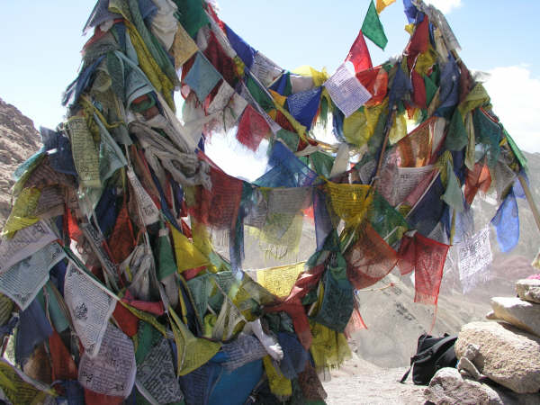
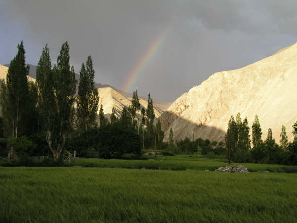
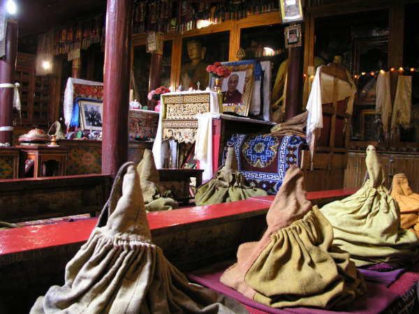

Gasping for breath I : Sham Trek
Sham, Ladakh, India
We were nervous - to say the least - about our first Himalayan trekking experience. We were worried about everything from being able to breath, to our muscles holding up. So we decided to go for the slowly, slowly approach and started off with the 'baby trek' in the Sham region of Ladakh. Also, we decided to stay at people's homes along the way, rather than camping - so basically we went for the luxury option!!
We took a taxi from Leh to a little village called Likir with our guide, Dorjay and helper, Tashi. The journey, although only quite short, took 2.5 hours as we had to wait for the road to be rebuilt on one stretch (not exactly comforting - I can tell you!)
The trek took three days taking us from Likir to Yangthang to Hemis Shuckpachen and finally Temisgam. Yangthang was one of the highlights of the trip - we stayed in a room on the roof of a farmer's house and at night sat up there looking up at the perfect Milky Way (no street lights here to ruin our stargazing!) We had dinner in the home's kitchen late at night and half way through dinner the farmer's wife returned from the fields after a hard day's work. She sat down with us, said her 'julleys', gobbled down her dinner in about 10 seconds and then fell fast asleep on the floor. (Sadly, we didn't take a photo of her - but she was the spitting image of Little Mrs Pepperpot!) Shortly after dropping off her husband gave her an almighty shove and said something in Ladakhi which was probably something like "Wake up - don't be so unsociable we've got guests from Leh!"
Most of the walking wasn't too difficult. Probably the scariest bit was a river crossing. Actually, our guide assured us it was only a stream, but it closely resembled a very fast running river to us! Shoes and socks were off and we waddled across slippery rocks, battling with the current until we reached the other side with freezing blue feet!
Then, on the final day we had the highest pass yet (nothing compared to what we WILL be doing though!) which took us up about 500m. That really left us gasping for breath, but the views from the top, sitting amongst prayer flags, made it all worth it.
We took a taxi from Leh to a little village called Likir with our guide, Dorjay and helper, Tashi. The journey, although only quite short, took 2.5 hours as we had to wait for the road to be rebuilt on one stretch (not exactly comforting - I can tell you!)
The trek took three days taking us from Likir to Yangthang to Hemis Shuckpachen and finally Temisgam. Yangthang was one of the highlights of the trip - we stayed in a room on the roof of a farmer's house and at night sat up there looking up at the perfect Milky Way (no street lights here to ruin our stargazing!) We had dinner in the home's kitchen late at night and half way through dinner the farmer's wife returned from the fields after a hard day's work. She sat down with us, said her 'julleys', gobbled down her dinner in about 10 seconds and then fell fast asleep on the floor. (Sadly, we didn't take a photo of her - but she was the spitting image of Little Mrs Pepperpot!) Shortly after dropping off her husband gave her an almighty shove and said something in Ladakhi which was probably something like "Wake up - don't be so unsociable we've got guests from Leh!"
Most of the walking wasn't too difficult. Probably the scariest bit was a river crossing. Actually, our guide assured us it was only a stream, but it closely resembled a very fast running river to us! Shoes and socks were off and we waddled across slippery rocks, battling with the current until we reached the other side with freezing blue feet!
Then, on the final day we had the highest pass yet (nothing compared to what we WILL be doing though!) which took us up about 500m. That really left us gasping for breath, but the views from the top, sitting amongst prayer flags, made it all worth it.

Prayer Flags on final pass of Sham Trek

Views from Temisgam Gompa

Temisgam just before a storm

The Indus

Monks robes at Liker Monastery